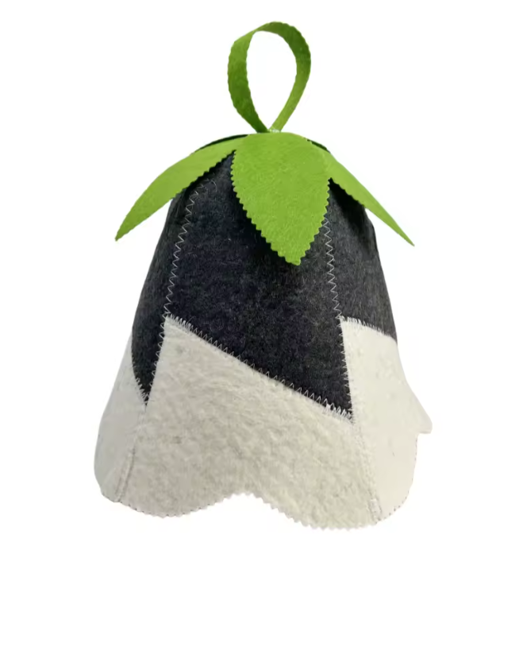

Sauna people are easy to shop for once you know the secret: they want things that make the ritual better. Better heat, better cool-downs, better post-sauna lounging. Here are twelve gifts that sauna regulars actually use, roughly in order of price.
Stocking stuffers (under $40)
1. A wool sauna hat
This is the one we'd put at the top of any list, and not only because we sell them. A sauna hat is the accessory most sauna-goers mean to buy and never do. Felted wool insulates the head from the hottest air in the room (the air near the ceiling), so your head stays comfortable while the rest of you warms up. That usually means longer, more relaxed rounds.
Good options: the classic Bucket hat with a brim that shades the eyes and ears, the deep Belltop that covers the ears fully and has a loop to hang on the wall, or the seamless 100% Merino hat in five colours for the person who saunas three times a week. All are a roomy one-size adult fit, so you don't need to guess a hat size.

2. A linen or cotton seat towel
Most public saunas ask you to sit on a towel, and a long, narrow seat towel is far nicer than a bath towel bunched underneath you. Linen dries fast and packs small.
3. Flip-flops or sauna sandals
Unglamorous, essential. Wet change-room floors and icy decks in a Canadian winter are both reasons to keep a pair in the sauna bag.
4. A good insulated water bottle
Everyone sweats more than they think in a sauna. A bottle that keeps water cold through a long session gets used every time.
5. Essential oils for the water bucket
In a traditional sauna with a bucket and ladle, a couple of drops of eucalyptus or pine oil in the water makes the steam smell amazing. Always add oil to the water, never straight onto the stones, and check the sauna owner is fine with it.
Mid-range gifts ($40–$150)
6. A wooden bucket and ladle
For anyone with a home sauna, a proper wooden bucket and ladle beats the plastic one that came with the kit. Look for a liner or a wood that's made for wet heat.
7. A sauna robe or hooded towel
The time between rounds is half the ritual. A thick robe (or a hooded towel poncho for outdoor saunas) makes standing in the snow between rounds a lot more pleasant.
8. A sauna thermometer and hygrometer
Home sauna owners love knowing exactly how hot and humid it is. A wooden-framed dial thermometer looks right on a cedar wall and lasts for years.
9. Matching hats for a couple or a family
A pair of hats in two colours is a nice way to make the gift feel bigger without spending much. The Merino hat comes in Forest, Royal Blue, Moss, Mustard and Natural White, which makes it easy to give each person their own and stop the "whose hat is this?" debate on the sauna wall.
Experience gifts
10. A booked sauna session
For many people the best sauna gift is simply more sauna. Look for a local bathhouse, Nordic spa, or a mobile sauna you can rent for the day. If they're in the Sea to Sky, Mamquam Sauna delivers a wood-fired barrel sauna and cold plunge for a private 24-hour session in Squamish, Whistler and Pemberton.
11. A cold plunge or ocean swim outing
Pair the heat with the cold: a guided cold-water swim, a plunge pool session, or simply a planned morning at the lake with a thermos and a towel afterwards.
For the business owner
12. Custom embroidered hats
If the sauna lover in your life runs a spa, gym, plunge studio or sauna business, branded hats make great merch for their regulars. We do custom embroidered sauna hats, with typical runs starting around 200 pieces and one-offs on request.
A few gifting tips
- Order early. Our in-stock hats ship in 1–3 business days and usually arrive within about a week, but December mail is slow. Aim for early December.
- Sizing is easy. Our hats are a roomy one-size adult fit (about 55–60 cm), so you don't need to know their head size.
- Returns are simple. Unworn, unwashed hats can be returned or exchanged within 30 days of delivery.
- Free shipping over $75. Two or three hats usually gets you there, so it's worth buying for the whole sauna crew at once.
Questions
What is a good gift for someone who loves the sauna?
A wool sauna hat is the classic pick: it's affordable, it gets used every session, and most people don't buy one for themselves. Robes, linen seat towels, a wooden bucket and ladle, or a booked sauna session are also well received.
Do sauna hats make good gifts?
Yes. A felted wool sauna hat is under $40, fits most adults (roughly 55–60 cm), and keeps your head cooler so you can stay in longer. It's one of the few sauna accessories almost every regular ends up wanting.
When should I order sauna gifts for Christmas in Canada?
Order by early December. In-stock hats from Sauna Hats Canada usually ship within 1–3 business days and arrive in about a week, but holiday mail gets slower closer to Christmas.
Shop wool sauna hats, shipped across Canada from Squamish.
Bucket, Belltop and 100% Merino. Free shipping on orders over $75.
More from the journal: Sauna Etiquette: 12 Unwritten Rules · What's the Best Material for a Sauna Hat? · All posts